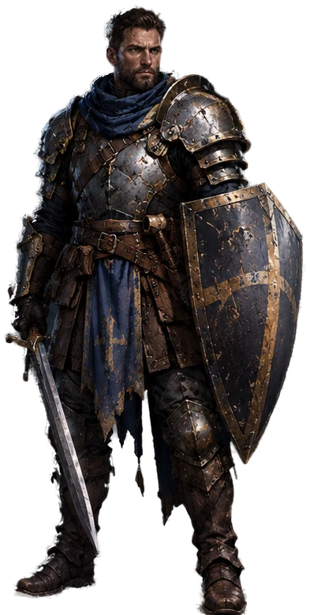
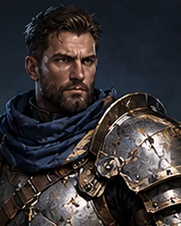

Полная фигура

Лицо и крупный наплечник

Усталый угловатый ветеран, короткие тёмные волосы, борода. Синий шарф и массивный скруглённый наплечник.

Групповой арт — проверка общего стиля и массивности Брана.
Щит, ремни и ткань
Тёмно-синий щит-капля: золотой крест и окантовка. Коричневая кожа, потёртая сталь, синий рваный табард.
Меч — в правой руке, щит — на левой. Герой обращён вправо.